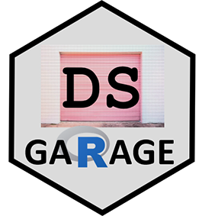
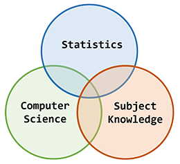
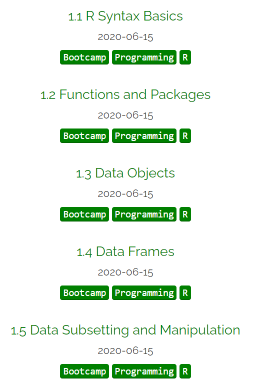
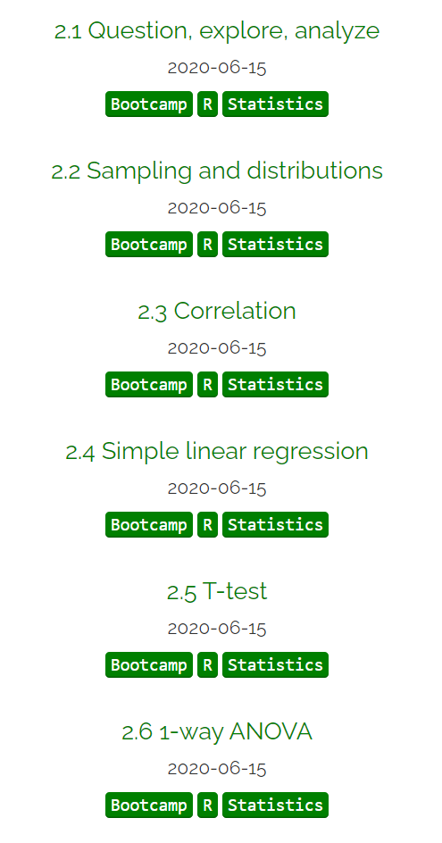
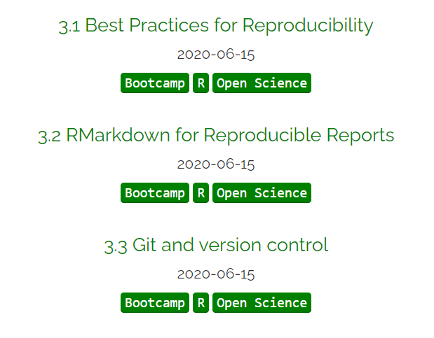

R Bootcamp Launch
Data science garage https://dsgarage.netlify.app/
Data science garage
�
https://dsgarage.netlify.app/
What is DS garage about?
�
Modern tools for thinking about data :: evidence

Traditional Bootcamp
�
Difficult, unfriendly, intense
Ed’s R Bootcamp
�
Working together to do something good and worthwhile
Why R bootcamp?
�
�
be a SELF-GUIDED resource to
learn basic R programming and basic statistics
assume no prior knowledge
Who is it for?
�
Anyone who wants to learn from data
Academic colleagues who want to learn R
Learning data scientists
Other interesting people
What will you learn?
�
Intro R programming language
Best practice for reproducible scripts
Tidy data
Review of simple statistics (just enough…)
How is it organised? https://dsgarage.netlify.app/bootcamp/
�
Module 1 (pages 1.x): A bare-bones introduction to R and Rstudio for beginners
Module 2 (pages 2.x): A bare-bones introduction to using R for traditional data analysis
Module 3 (pages 3.x): An introduction to reproducible code, R Markdown, and Github
How is it organised?
Module 1

How is it organised?
Module 2

How is it organised?
Module 3

Coding
It is important to type and run code for practice